Vinegar is a CHIP-8 and SCHIP 'emulator'/interpreter.
CHIP-8 was a simple language interpreter found on some early home computers, and has a very small instruction set. The machines it ran on had a 64x32 resolution display; they also had a simple hex keypads (a 4x4 grid of keys 0 to F) for input, which might explain the odd key layout this program uses.
CHIP-8 was revisited in the 1990s thanks to an interpeter for the HP48 calculator. The instruction set was extended and the screen resolution doubled to 128x64, but is fully backwards compatible with the original CHIP-8. This is the "SUPER-CHIP" (SCHIP) part of this interpreter.
It is easy to find programs in CHIP-8 or SCHIP, and using the command script file included you can easily convert the files to a format that can be sent to your calculator.
This package comes with 3 binaries; one for TI-83, and two for TI-83 Plus. Send the one that best matches your calculator model and shell to your calculator using your linking program.
You won't be able to use this interpreter without having a few CHIP-8 programs installed. I've included a rather large number of them in the ROMs subfolder of this package. Both CHIP-8 and SCHIP programs are sent/run in the same way on the calculator, but I thought it best to split them into subfolders so you can tell the difference (for example) between the two versions of Blinky.
If you run the program, you should be able to see the installed program in a list, a bit like Ion's main view. Highlight the program you wish to start using the ↑ and ↓ keys, then press 2nd or Enter to run it.
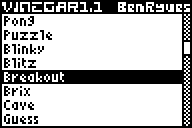
The key layout is a little odd; here is a CHIP-8 keypad and a TI-83 keypad for comparison.
| CHIP-8 | |||
|---|---|---|---|
| 1 | 2 | 3 | C |
| 4 | 5 | 6 | D |
| 7 | 8 | 9 | E |
| A | 0 | B | F |
| TI-83 | |||
|---|---|---|---|
| 7 | 8 | 9 | × |
| 4 | 5 | 6 | - |
| 1 | 2 | 3 | + |
| 0 | . | (-) | Enter |
If you set the Alternate keys option, Vinegar uses a different keymap, where 0-9 and A-F (Math-Prgm) are mapped directly to their CHIP-8 equivalents. Because the keys are no longer in a neat 4x4 grid, this would make games requiring directional input rather difficult (not to mention upside down).
The other keys for this program are:
| Key | Program selection | In-game | Settings |
|---|---|---|---|
| Clear | Quit | End simulation | Return |
| Mode | Quit | Invert colours | |
| 2nd | Run | Toggle tickbox | |
| Enter | Run | Toggle tickbox | |
| Alpha | Settings | Settings | Return |
| ←/→ | Scroll display | Change value | |
| ↑/↓ | Change selection | Adjust Contrast | Change selection |
| Del | Restart | ||
| Y= | Set to 0 | ||
| Window | Centre display | Set to 50 | |
| Zoom | Toggle 96x64 SCHIP mode | Set to 100 | |
| Trace | Quick load | Set to 150 | |
| Graph | Quick save | Set to 200 | |
| , | Pause |
The settings screen (Alpha) is very useful when it comes to setting the speed of the simulation.
Do note that the screen scrolls! There are several options off the bottom of the display that you will need to scroll down to get to.
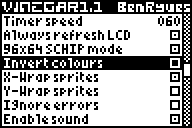
The various options can be summarised thusly:
In terms of general speed settings, the fastest possible simulation is to have an Instruction delay of 0, a Frame skip of 255, and Always refresh LCD and sound disabled. The slowest is to have a delay of 255, a skip of 0, LCD refreshing and sound on.
Here is a comparison between the 128x64 and 96x64 SCHIP modes (the game is "Joust"):
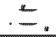 |
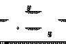 |
| 128x64 | 96x64 |
|---|
As you can see, when viewed at a native resolution, some parts of the display are hidden.
The timer speed only applies to games that use it (such as Joust) to throttle their speed. It is in Hertz; the original CHIP-8 was 60Hz.
Note that games can only check for it to go zero; if the emulation is running slowly (long delays, low frame skip, always refresh LCD) then it might reach zero a long time before the game gets a chance to read it. However, speeding up the emulation (low delays, high frame skip) will not cause this timer to finish earlier, and it caps the speed.
I calibrated the speed using a program on my PC to time the interrupt rate of my calculator (~110Hz), and it ticks at as close to 60Hz as you're going to get by default. Different hardware and battery levels will skew the rate slightly. I'd be interested to see how this works on a crystal-based calculator, as I believe you can adjust the rate of the interrupts more precisely.
Last of all; if the screen sort of dithers to 50% and the simulation stops, this is because the game has requested that the emulation stops. (For example, when you die in Ant). Press Del to restart (as usual). Vinegar pauses at this point rather than exit to the selection screen to let you quick load a saved state.
Vinegar supports a quick saving and loading mechanism. You can press Graph to save your current state, then Trace to instantly recall it.
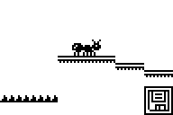
To save your current state, Vinegar needs to make a complete copy of the memory, screen image, registers, stack... everything! Therefore, as well as the 5KB it normally needs, it needs an extra ~5.5KB for the saved state. If you don't have that extra free RAM, Vinegar will still run, but won't allow you to save states.
When it has saved a state successfully, a small floppy disk icon appears in the bottom-right of the display for half a second or so. If it doesn't appear, it is because there is insufficient free RAM.
Loading recalls everything instantly - even if you're in another game. The saved state is cleared when you exit Vinegar, to save a bit of space on your calculator.
Here's a brief table describing the bundled software, first dealing with the CHIP-8 and then SCHIP programs.
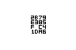
Rearrange the tiles into the sequence 0-F. As this doesn't randomise, you need to mash the keys to rearrange them yourself. (See Puzzle for a better version).
Press a key in the 4x4 key grid to move the spacer there on-screen.
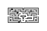
Pacman clone. Eat all the pips in the maze, avoiding the ghosts.
1/2 for left/right, 9/6 for up/down.
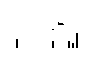
You must destroy the town's buildings. Your 'plane flies from left to right, going down one each pass. Make sure to disable sprite Y-wrapping before you run this game.
5 to drop bombs, any key to skip menus/titles.
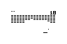
Arkanoid/Breakout clone. You must bounce the ball with your paddle to break the 'Brix'. You have 5 lives, make sure not to drop the ball!
4 and 6 to move the paddle.
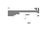
Breakout clone; modified version of Brix to give it graphics like the Atari 2600 game.
4 and 6 to move the paddle.
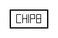
Displays "CHIP 8" with a border.
Guide the dot to end of the cave maze without bumping into a wall. One in motion, you cannot stop!
4/6 for left/right, 8/2 for up/down. Enter skips the title screen.
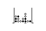
2-player game; take turns to drop coloured disks into the grid. First person to get 4 in a line (row, column or diagonal) wins. There is no win checking.
4 and 6 to move the cursor, 5 to drop.
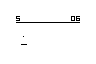
Catch the drop coming from the pipe at the top of the screen with your paddle.
4 and 6 to move the paddle.
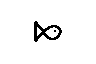
Draws the logo to hap's Fish 'N' Chips emulator.
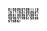
Guessing game. Pick a number between 1 and 63. CHIP-8 displays several cards, press 5 if your number is on the card; any other key if your number isn't. At the end, CHIP-8 displays your number.
5 for yes, any other key for no.
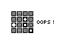
Memory game; uncover matching pairs of cards to win the game.
Documentation
4/6 for left/right, 8/2 for up/down. 5 uncovers cards.
Draws the IBM logo.
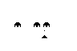
Space Invaders clone. Shoot the aliens down before they land.
4 and 6 to move the gun, 5 to fire/skip title screen.
Little graphics program - enter a sequence of commands, then tell CHIP-8 to repeat them to generate a pattern.
4/6 for left/right, 8/2 for up/down. . repeats the pattern you entered.
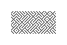
Generates a random maze.
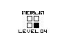
Simon clone. A sequence is displayed, which you must memorise and play back. Each level adds one extra movement in the sequence. Getting a sequence wrong ends the game.
4, 5, 1 and 2 represent the 2x2 grid.
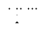
Shoot the targets with the moving gun. Each shot makes your gun move faster.
2 to fire.
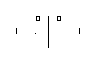
Two player - bounce the ball between the paddles for points.
7/4 for player one, ×/- for player 2.
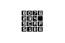
4x4 tile puzzle - rearrange them into the order 0-F.
4/6 for left/right, 8/2 for down/up. Use the alternate keys mode!
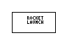
Animated text bounces around the screen. Having sprite x-wrapping enabled draws two extra dots on the left of the display.
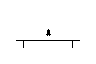
Appears to be the second half of Rocket.
Enter launches the rocket.
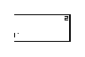
Bounce a ball around a squash court with your paddle - try not to miss! Note that having sprite x-wrapping enabled results in an inverted paddle, but the game still appears to function.
7 and 4 for up/down.
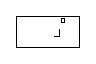
Snake/Nibbles clone. Guide your snake to pick up the large zeroes for points without crashing into the walls or yourself. Each time you eat one, you get longer.
1/2 for left/right, 9/6 for up/down. Enter to start with walls, + to start without. Press (-) to see your score at the end.
You have 25 shells. Move around and shoot the moving target to get points. If you bump into the target, you lose 5 shells.
4/6 for left/right, 8/2 for down/up. 5 fires. Use the alternate keys mode!
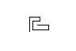
Tron clone; guide the snake around and around, trying not to bump into yourself.
4/6 for left/right, 8/2 for up/down. Enter restarts or skips the title screen.
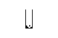
Tetris clone. Slot the blocks together as they fall to keep going for as long as possible. Completely filled rows as removed.
5/6 for left/right, 4 to rotate and 1 to drop.
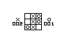
2-player noughts and crosses board. You must line up 3 of your tokens before the other player to win. Take it in turns to play; wins are recorded.
Press a key on the 3x3 grid of keys 1-9 to place a token.
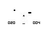
You have 15 missiles to fire; shoot the two UFOs for points. The large one is worth 5 points, the small one 15.
4 shoots left, 5 straight up and 6 shoots right.
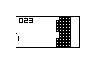
Another Breakout-themed game, this time the paddles moves vertically.
4/7 for up/down, 1 to skip the title screen.
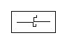
Two-player Tron game. Keep going for as long as possible without crashing into a wall or your opponent.
Player one: 1/0 for up/down, 7/8 for left/right. Player two: ×/- for up/down, (-)/Enter for left/right.
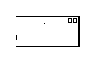
Identical to Squash, but does not keep track of your lives.
7 and 4 for up/down.
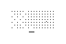
Another Breakout variant. Your score is displayed when the game is over.
4 and 6 to move the paddle.
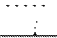
Space invaders clone.
9/× for left/right; 0 to fire or skip the title screen.
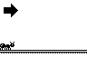
Very cool platformer game.
9/× for left/right; 0 to jump.
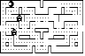
High-res SCHIP version of the CHIP-8 game. Also adds double-sized pips (2 pixels tall) which allow you eat the ghosts for a limited time (better with sound).
1/2 for left/right, 9/6 for up/down.
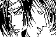
Decodes and displays a headerless monochromatic BMP file.
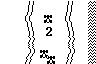
Simple racing game - avoid bumping into the walls or other cars..
1/2 for left/right.
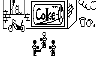
Part of a demo of a Double Dragon spin-off.
Documentation
3/(-) for up/down, ./Enter for left/right. 7 punches, 8 kicks.
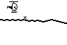
Second part of the Dragon demo.
Documentation
4/6 for left/right, 8/2 for up/down. 5 drops a bomb.
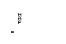
SCHIP emulation test ROM. Displays the problem that half-pixel scrolls are not supported.
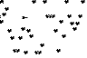
An asteroid-dodging game.
1/2 to apply thrust left/right (you move in the opposite direction), ×/- to move up/down. 7/8/4/5 set the speed (from slowest to fastest).
Joust clone. You must attack the other soldiers by landing on their head. They will turn into an egg, which you collect for points. If they land on your head, you lose a life.
Documentation
9/× for left/right; 0 to fly or skip screens.
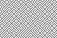
High-resolution SCHIP version of the CHIP-8 maze generator.
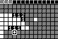
Minesweeper clone. Clicking a square reveals the number of mines in the area around it, or blank if there are no mines. Clicking on a mined square loses the game.
Documentation
4/6 for left/right or level up/down, 8/2 for up/down. 5 checks a square. × flags a square as mined.
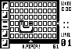
Pipe-mania clone. Plug the leak as fast as you can! Place pipe segments from the bottom of the stack on the left of screen.
Documentation
1/2 for left/right, 9/6 for up/down. 4/7 places a pipe and selects a new pipe segment (7 is random, 4 is the segment on the right of the display). Enter makes the water flow faster.
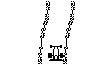
Tunnel game, similar to Car. Avoid the walls of the tunnel for as long as possible.
1/2 for left/right.
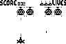
Space invaders clone.
Documentation
9/× for left/right; 0 to fire or skip screens/start.
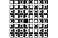
Lights-on game. Switch on every tile in the grid to complete the level. Press a tile toggles the status of it and squares above, below, left and right of it.
Documentation
4/6 for left/right or level up/down, 8/2 for up/down. 5 presses a tile.
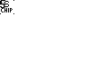
Emulator test. Pretty useless.
Drop depth charges onto submarines for points within the time limit.
Documentation
1/2/3 set the speed of the ship (slowest to fastest). + drops a depth charge; × ends the current game. Enter restarts.
Another snake/nibbly clone; in this one, you rotate the direction the snake is heading in increments of 90°.
2/3 to rotate left/right 90° respectively.
CHIP-8 is a high-level low-level language, and as such can potentially muck up whatever it is you are running it on.
Vinegar checks the stack level, data pointer, current instruction and program counter whenever it's about to use them for something potentially dangerous. If it senses that something is wrong, you'll end up with a screen like the following:
The three reported value are program counter, opcode and index register. The different errors are:
You can disable this error screen on the settings page; beware that this will cause some simulated programs to 'crash' (there should be no danger to your calculator).
In the root of this zip file is a Windows application, CHIP-8 Converter. If you download a CHIP-8/SCHIP game you want to play on your calculator, drag-and-drop it on top of the EXE file and it will output two calculator files (8xp and 83p) for use with Vinegar.
If you feel bold and daring, run this program from your command-line with the syntax:
"CHIP-8 Converter.exe" filename programname caption
...where filename is the name of the CHIP-8 program, programname is the name of the program on the calculator, and caption is the caption displayed by Vinegar.